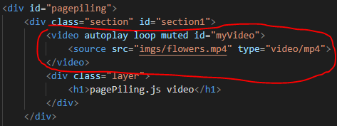

Fitur pertama dari PagePiling.js
Mengganti Scrollnya bisa menjadi horizontal dan vertical
dengan mengubah coding berikut:

Fitur kedua dari PagePiling.js
Dapat melakukan Looping scrool page dengan menambahkan code tersebut
ketika pada page 4 akan otomatis kembali ke page 1 jika melakukan scroll bawah, begitu juga sebaliknya
Fitur ketiga dari PagePiling.js
Kita dapat mengcustom sendiri kecepatan scroll speed
dengan menambahkan

Fitur keempat dari PagePiling.js
Dapat membuat video menjadi backgorundnnya
